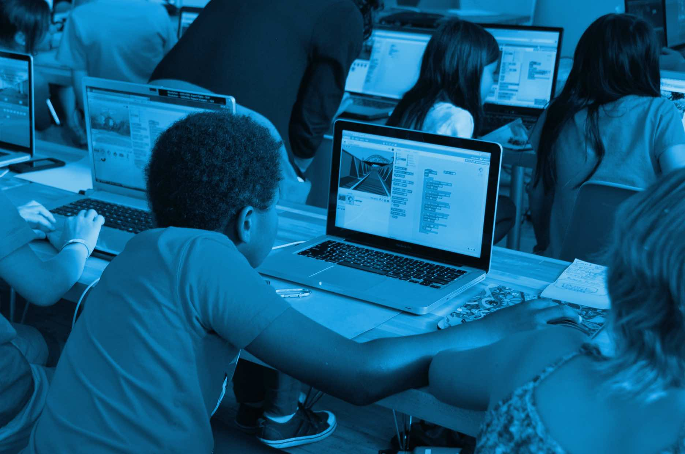

Intents
• Content by priority kids. • Photo credits: ui8
In web development, CSS and design work hand-in-hand to create compelling user experiences. CSS brings designs to life digitally, translating visual mockups into actual rendered elements.
We Are
PriorityKIds® LLC is an organization, utilizing an aggregate approach to empowering “the global child”. Where they can stay on track through higher education and technical skills programs. As well as go on to compete effectively in the global markets for goods and services.
Designers should have a strong handle on core CSS concepts like the box model, selectors, specificity and inheritance.
When designing for the web, keeping CSS in mind from the start prevents frustration down the road. For example, typography and color schemes are heavily influenced by CSS and layered graphical elements must be broken down into achievable HTML components.
function toggleAttr(el, name, flag) {
flag ? el.setAttribute(name, 1) : el.removeAttribute(name)
}
function restoreTabs(flags) {
const panels = $$('[role=tabpanel]')
$$('[role=tab]').forEach((el, i) => {
toggleAttr(el, 'aria-selected', flags[i])
toggleAttr(panels[i], 'hidden', !flags[i])
})
}Exploit the power of selectors
On the development side, CSS itself involves visual design skills. Bringing a layout to life requires not just coding, but typographic, spacing and color sensibilities. CSS skills give developers control over the final look and feel.

Overall, CSS is a uniquely visual language, with a direct impact on user-facing design. By embracing its connection to the design process, both designers and developers can build interfaces that are engaging and CSS-native
. The closer these roles work together, the better the end result. (edited)
Conclusion
The goal is to create a funding and social platform, so that children are surrounded by an enriching environment of education-oriented peers, supportive adults and true economic resource allocation. A counterweight to a toxic popular culture that glorifies misogyny, anti-social behavior and “poverty for the most, for pleasure for a few”. The company, our staff and 13-member board are committed to funding or creating programs that offer the highest possible quality services, with the goals of implementing best practices and improving the lives of children and families in the global community..